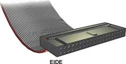
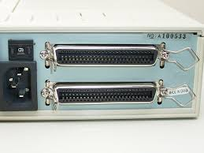
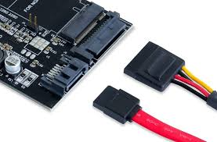
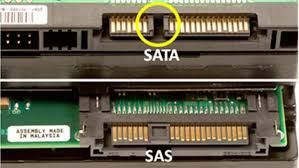

La interfaz es un componente electrónico que gestiona el flujo de datos entre el sistema y el disco, siendo responsable de factores como el formato en que se almacenan los datos, la tasa de transferencia, etc.
IDE ( Integrated Drive Electronics )
Creada por Western Digital. Su principal caracteristica era la implementación de la controladora en el propio
disco duro. Se eliminó
la necesidad de disponer de dos cables separados para control y datos. Se estableció el termino ATA ( AT
Attachment) que define una serie
de normas que deben cumplir los fabricantes de unidades de este tipo.
Este tipo de controladores tenian limitada su capacidad a 512MB, velocidad de transferencia de 4MB/s y solo
soportaban dos discos.
EIDE ( Enhanced Integrated Drive Electronics )
EIDE mejora el IDE aumentando la capacidad a 8,4GB, tasa de transferencia de 10MB/s y hasta 4 unidades de disco ( estableciendose un maestro y un exclavo por bus). Además se implementan los sistemas CHS y LBA para traducción de los parametros fisicos.
SCSI ( Small Computer System Interface )
Small Computer System Interface (SCSI) es un estándar entre determinados dispositivos que se pueden conectar a una computadora, tales como discos duros. SCSI se introdujo en 1986 como un componente de Apple y las computadoras Amiga. La idea básica era dar una alternativa más rápida a Integrated Drive Electronics (IDE) y presentar una interfaz que se pudiera comunicar con casi cualquier dispositivo diseñado. SCSI alcanza varias velocidades dependiendo de la versión, desde 5MB/s para SCSI 1 hasta 80MB/s para SCSI3, y ha sido utilizado tradicionalmente en entornos profesionales, donde prima la fiabilidad y la flexibilidad.
SATA ( Serial ATA )
Mezcla tecnología de señal seria con discos ATA. Los cables son mas delgados con lo que se evitan problemas con los sistemas de refrigeración. Las velocidades maximas son 1,5GB/s para SATA1, 3GB/s para SATA2 y 6GB/s para SATA3.
SAS ( Serial Attached SCSI )
Sustituye a SCSI usando los mismos comandos pero con una interfaz serie. La primera versión apareció a finales de 2003: SAS 300, que conseguía un ancho de banda de 3 Gbit/s, La siguiente evolución, SAS 600, consigue una velocidad de hasta 6 Gbit/s y posteriores evoluciones funcionana a 12 Gbit/s alrededor del año 2015.
PCIe ( PCI Expres)
Al igual que en caso del SATA, al hablar de interfaz PCIe no nos estamos refiriendo al conector físico, sino a
la forma en la que se transmite la información desde la unidad de almacenamiento al procesador. Tal y como
sucede en el caso del SATA, el PCIe también cuenta con diferentes formas de gestionar e interpretar la
información que se le solicita:
- AHCI: Este modo ya existe en SATA, pero también se ha implementado en la interfaz PCIe con
el objetivo de mantener la compatibilidad con los dispositivos y sistemas SATA anteriores, aunque no es el
sistema que mejores resultados ofrece en términos de velocidad.
- NMVe o NMVHCI (Non-Volatile Memory Host Controller Interface): Esta especificación se ha creado a medida de
las
unidades SSD con interfaz PCIe, por lo que ofrece los mejores resultados en cuanto a velocidad de transferencia
y optimiza la latencia y el procesado paralelo de los actuales procesadores.
La principal ventaja del PCIe frente al SATA es que permite transmitir una mayor cantidad de información de una
vez, utilizando varios canales.
Por ejemplo, PCIe 1.0 de un carril puede llegar a 2Gb/s, mientras que con 16 carriles llega a 32Gb/s.